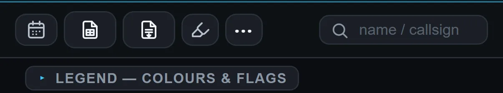

MOCK-UPEdit Schedule on your iPhone, weeks of 6, 13 and 20 Jul. Real pictures of the app, so nothing can be tapped.
Swipe through the days as usual. Swipe past Monday 13 Jul or Sunday 19 Jul and you scroll straight onto the other week's day. When it stops, that week loads under it.
Switch the end card in the bar at the bottom and feel the difference. Compare with the real app's swipe on your phone.
